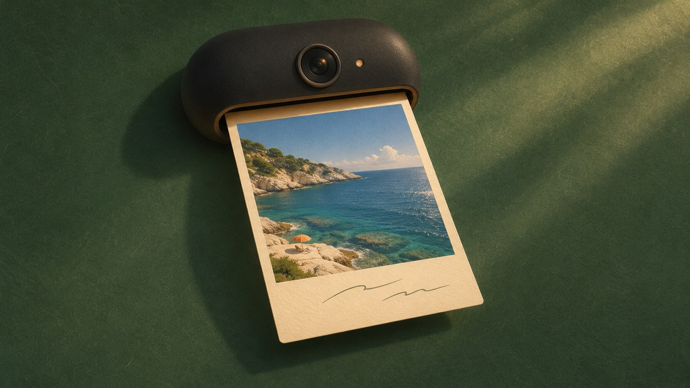
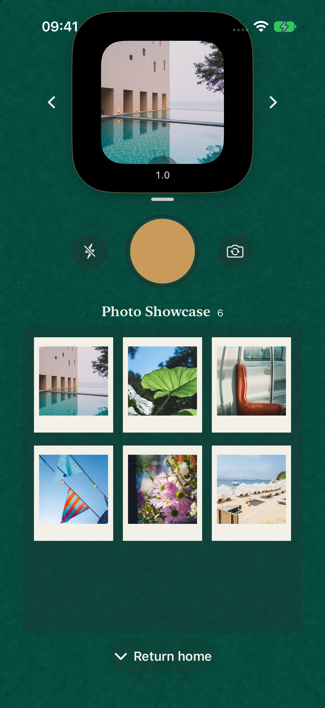

Postcard Camera
From snapshotto postcard.
Sunlight catches the rocks on your walk by the sea. You take a photo and think of the person who walked this path with you last time.

A little camera with a film feel
On iPhone or iPad, go to the top of Postcard’s Home screen and pull down. On an iPhone with Dynamic Island, a square viewfinder unfolds from that spot.
Pick a film look or a camera simulation as you frame your shot. Press the shutter and watch a print slide out on screen, the image slowly coming into view. Your shots stay in the Photo Showcase, ready to turn into postcards.


Try a different look for the same photo
These three film looks and the option to redevelop a photo require Postcard 1.3.0 or later.
- Sunlit Film
- Subtle grain for window light and everyday snapshots.
- Coastal Blue Film
- Deeper blues and richer shadows for bright skies and water.
- Meadow Green Film
- Vivid greens and more visible grain for grass and foliage.
To try another look after you shoot, open the photo in the Showcase and tap the film name beneath it. Choose a different look and save it as a new photo. Both versions stay in the Showcase.
Write to the person you thought of
Open your photo in the Showcase and tap Make a Postcard. Pick a paper you like and write a few words with your finger. One line might be enough.
“The sea is still that blue.”
Keep the digital postcard for yourself, or share it with the person who walked that shore with you.
View Postcard on the App Store